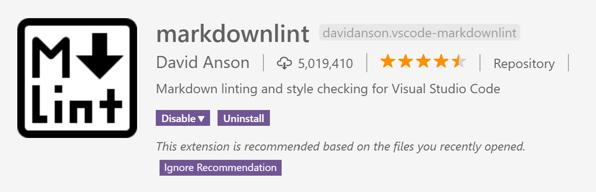

Markdownlint 是 Visual Studio Code 的一个 Markdown 插件。

markdownlint_intro
VS Code插件目录：%userprofile%/.vscode/extensions
如何忽略项
Rules can be enabled, disabled, and customized by creating a JSON file named
.markdownlint.jsonor a YAML file named.markdownlint.yaml(or .markdownlint.yml) in any directory of a project.
Visual Studio Code - File（工具栏） - Preference - Settings - Extensions - markdownlint - Markdownlint: config - Edit in settings.json
也可以直接到%userprofile%AppData\Roaming\Code\User\settings.json里面找到
1 | { |